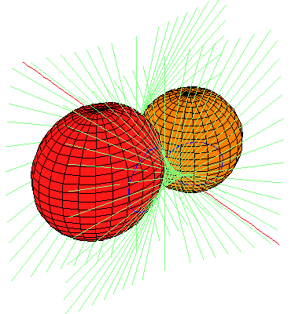
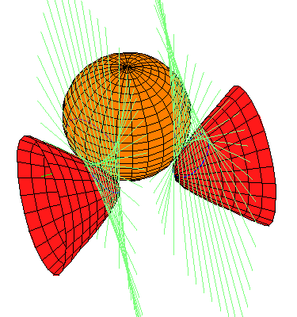
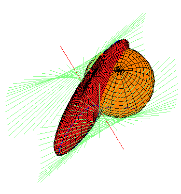
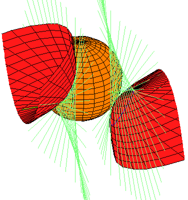

Back to the Four Symmetric Quadrics.
Back to the Four Symmetric Quadrics.
In the pictures below, the sphere in coral is the original sphere and the lines perpendicular to the x-axis and tangent to this sphere are drawn in light blue-green. Each quadric in red is a member of one of the families of quadrics tangent to the same set of lines perpendicular to the x-axis as the original quadric. Of the 12 families given by our Theorem, only 4 contain real quadrics. We display one real quadric from each family. Linked pictures are to animated .gif files showing how the quadric moves in the family.
Each family may perhaps best be thought of as parameterized by the points on a hyperbola with affine equation ab-1, with smooth quadrics corresponding to the points in the affine plane, but two singular members given by the two points at infinity. Our parameterization runs along one branch of this hyperbola, from a=sqrt(5)-2 to a=sqrt(5)+2, avoiding, but approaching the singular members.
These singular members are rank 2 quadrics with vertex either the x-axis or the y-z plane at infinity (their zero set is two planes meeting either in the x-axis or the y-z plane at infinity). Either the two planes are real or they are complex conjugates. Here, none of the singular members with vertex the x-axis consist of two real planes; they are both complex conjugates. On the other hand, Each of the singular members with vertex the y-z line at infinity consist of two real planes.
We have not yet generated movies of these families.
On the other hand, these families are each a single orbit of Rx,
the non-zero real numbers, which acts on R3 by scaling the
distance to the x-axis.
This observation leads to the conclusion about the limiting members of the
families.
|  |  | |
|  |  |
Back to the Four Symmetric Quadrics.
{kind=link}
{kind=link}
{kind=link}
{kind=link}